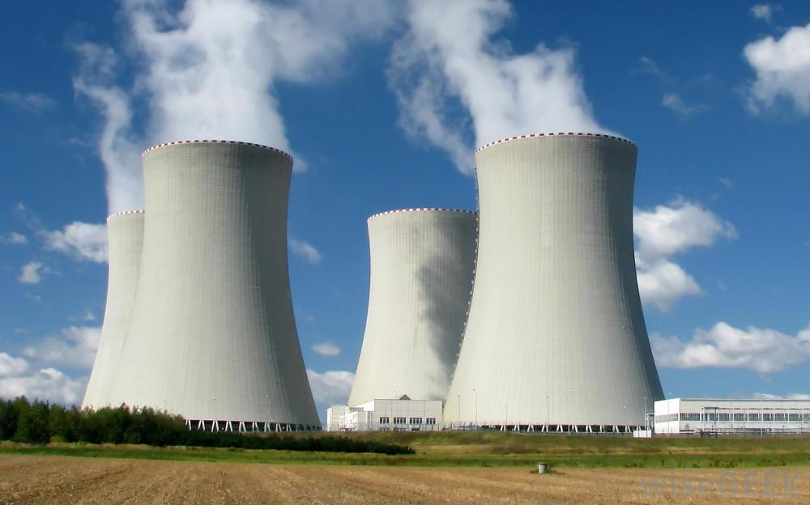
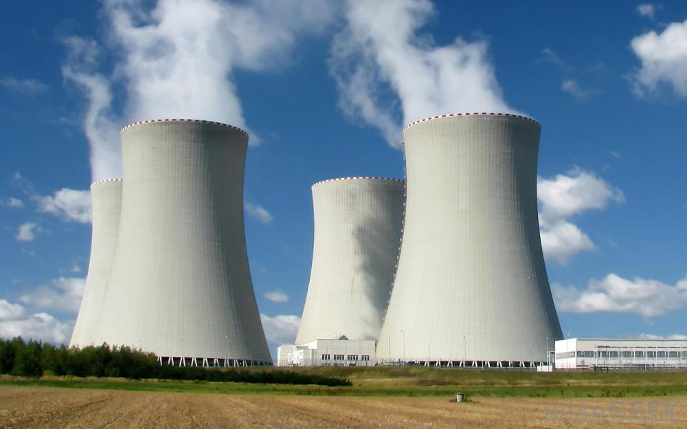

In order to be able to read the text in this site, you're gonna need to use this candle.


If you are readying this, you have access to the internet.
Regardless of the device you are using or the network you are using; the point is, you are online.
It has become a norm to our society. Many young people today would be shocked at the idea that what we have
wasn't always there. However, there is an element that all technology you use shares. It requires ENERGY to work.
Now, that statement may seem like something obvious, and to be fair, it may be. But there is reason for it.
We have a big issue in terms of how we manage our energy. Most of our major sources of energy have huge
reprecussions for our environment, are very difficult to manage, or are just too situational.
 

But the biggest problem is: We really take our energy for granted.
Imagine if you didn't have any electricity for 3 days. Could you manage to do that? I probably couldn't. But when we
have electricity? we go all out. Sure, maybe at home we are a bit more conscious, but how much do you care if you
leave the lights on in a public building?
This is something that we have to take seriously, as a whole. And this something that can benefit even the everyday man (after all,
saving some money from the electric bill can only help). And to give you perspective, I set up a little experiment.
The candle in this site is the only way to read this, if you waste it, you won't get it back, at least not for a long while.
If you are reading this, congratulations! you used your candle wisely. It may be a bit exagerrated, but we can't get energy
back. There is a message at the bottom that you should keep in mind. You need to turn off the candle first to read it though.
If you were unable to read the entire message in this site, you probably wasted your candle. I can't know if it was intentional or not, but at the end of the day you let that light burn out. You won't be able to see the message of this site for a while. But remember that in real life, when something is used up, its gone forever.